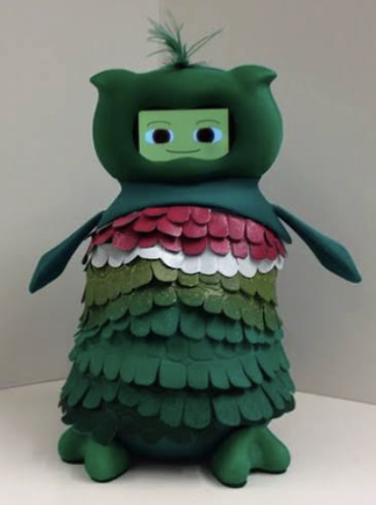

USC CURVE Research

The CURVE Fellowship provides undergraduate students with the opportunity to participate in faculty-led research at USC Viterbi through funded research fellowships.
As a CURVE Fellow, I conduct research in the Maja Matarić Interaction Lab, focusing on socially assistive robotics and human-robot interaction.
My research explores how interactive robotic systems can perceive, respond to, and support people through human-centered interaction.
Program: USC Viterbi CURVE Fellowship
Research Lab: Maja Matarić Interaction Lab
Research Area: Socially Assistive Robotics & Human-Robot Interaction
Institution: University of Southern California
My work through the CURVE Fellowship focuses on socially assistive robotics and the design of interactive systems centered around human needs and behavior.
This section will document my individual research contributions throughout the CURVE Fellowship, including the systems I develop, experiments I contribute to, and research outcomes.
Research currently in progress.